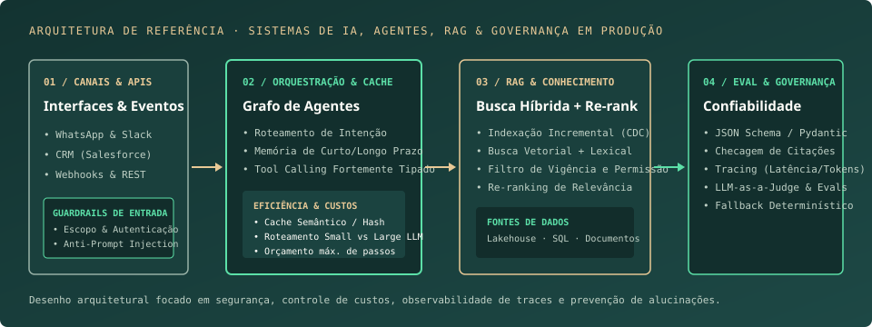

IA generativa e agentes
IA Generativa, LLMs, RAG e sistemas multiagentes com LangChain e LangGraph.
ENGENHARIA DE IA · AGENTES, RAG, LLMS & DADOS
Engenheira de IA · Efí Bank
Desenvolvo soluções de IA Generativa de ponta a ponta — da concepção arquitetural à operação em produção. Atuo na construção de agentes de IA, pipelines RAG (indexação, busca semântica/híbrida e re-ranking), avaliação sistemática (Evals), guardrails, controle de custos e integrações corporativas.
Engenharia
de Sistemas de IA
DO CONTEXTO BRUTO À DECISÃO GOVERNADA
01 / CURRÍCULO & TRAJETÓRIA PROFISSIONAL
PERFIL PROFISSIONAL
Engenheira de IA com experiência em IA Generativa, LLMs, RAG e sistemas multiagentes, atuando no desenvolvimento de soluções de IA de ponta a ponta, da prototipagem à produção.
Combinando desenvolvimento de software, dados e visão de negócio para criar soluções escaláveis, observáveis e seguras.
Desenvolvimento de soluções de IA end-to-end utilizando Python, LLMs, LangChain/LangGraph, RAG e sistemas multiagentes. Experiência com Databricks para construção, avaliação e serving de modelos, além de integração com Salesforce, WhatsApp e Slack. Atuação em prompt engineering, MLflow, observabilidade, escalabilidade, segurança e governança, aplicando IA em automações corporativas e produtos.
IA Generativa, LLMs, RAG e sistemas multiagentes com LangChain e LangGraph.
Desenvolvimento e deploy de modelos com Python, Databricks e MLflow.
Integração de soluções de IA com APIs e sistemas corporativos.
Avaliação, observabilidade, escalabilidade e governança de IA.
Engenheira de Inovação / IA
Desenvolvimento de protótipos, provas de conceito e demonstrações de soluções de dados e IA para clientes, utilizando Python, Snowflake, SQL e bancos relacionais, em ambientes SaaS e PaaS.
Estágio em Solutions Engineer
Desenvolvimento web com PHP e MySQL, suporte técnico e atendimento a chamados de diferentes setores, incluindo treinamento de usuários.
Estágio em Desenvolvimento de Sistemas
Desenvolvimento web com AngularJS, JavaScript, Node.js e MySQL, além de participação no alinhamento de requisitos com clientes e organização do desenvolvimento dos projetos.
Desenvolvedora Júnior

02 / RACIOCÍNIO DE ENGENHARIA & TÉCNICAS APLICADAS
Mais importante do que o modelo escolhido é a engenharia ao redor dele: indexação, recuperação, guardrails, avaliação contínua, cache, governança e controle de custos.
A qualidade da geração depende diretamente da precisão do contexto recuperado. Estruturo pipelines RAG tratando ingestão, representação e filtragem antes mesmo de chamar o LLM:
Prompts em produção são contratos de software, não textos improvisados. Aplico engenharia sistemática para garantir saídas determinísticas e medir regressões a cada mudança:
Agentes autônomos exigem limites claros de atuação. Desenho fluxos baseados em máquinas de estados (como LangGraph) onde o modelo decide o caminho, mas o runtime governa as permissões:
Colocar IA em produção exige previsibilidade financeira, baixa latência e auditoria completa de cada decisão tomada pelo sistema:
max_tokens e de chamadas de ferramentas por sessão, cache por hash de requisição/semântica e roteamento inteligente para modelos mais leves e rápidos quando a tarefa permite.03 / ESTUDOS DE ARQUITETURA & IMPLEMENTAÇÃO
Oito implementações práticas detalhando o problema de engenharia, a arquitetura adotada, as decisões de trade-off e o código-fonte. Clique em qualquer projeto para ver os diagramas, testes e detalhes de execução.
8 projetos
Arquitetura em camadas (Bronze, Silver, Gold) com separação entre tempo de evento e ingestão, isolamento de anomalias em quarentena e publicação atômica por ponteiro de versão.
Motor de validação que distingue sucesso técnico de integridade semântica dos dados, bloqueando promoções corrompidas e preservando a última versão íntegra para os consumidores.
Pipeline de recuperação combinando chunking com metadados de vigência, sincronização incremental via Change Data Feed, busca híbrida (vetorial densa + lexical) e filtros determinísticos de escopo.
Bancada de avaliação sistemática de LLMs comparando estratégias de prompt, validação estrita de schema (Pydantic), defesa contra prompt injection e trade-off entre latência, qualidade e custo por token.
Arquitetura de agentes com roteamento estruturado, ferramentas tipadas de leitura, nó revisor de evidências, orçamento máximo de chamadas (controle de loops/custos) e instrumentação de traces.
Arquitetura de automação que substitui consolidações manuais por geração determinística acoplada à camada Gold, garantindo idempotência por chave criptográfica e zero alucinação numérica.
Ciclo completo de MLOps para previsão horária com janelas deslizantes estritamente causais (respeitando atraso real de disponibilidade do dado), split temporal, registro governado e tabela de monitoramento.
Adaptador de avaliação automática para sistemas de Q&A que combina similaridade semântica densa com verificadores determinísticos de números, polaridade (negação) e entidades.
Nenhum projeto corresponde à busca. Tente outra tecnologia ou técnica.